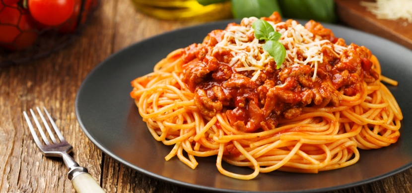

Špagety

Popis:
Snad není nikdo, kdo by neměl rád špagety. Jsou jednoduché a hlavně se dají připravit na mnoho způsobů. Dnes jsme si pro vás
připravili recept na tu nejchutnější masovou směs, kterou jste kdy ochutnali.
Suroviny:
- Parmazán na posypání
- Oregano
- Sůl a pepř
- Kečup
- Olej
- Cibule2 ks
- Kukuřice v plechovce1 balení
- Sýr Apetito nebo Smetanito2 ks
- Rajský protlak2 balení
- Mleté maso1 kg
- Česnek6 stroužků
Postup:
- Nakrájíme dvě cibule a na trošce oleje osmahneme, dokud nezesklovatí, přidáme mleté maso a necháme prosmažit.
Poté osolíme, opepříme, posypeme oreganem, nejprve jenom mírně a později můžeme přidat podle vaší chuti.
Prolisujeme česnek a přidáme k masu. Vše důkladně promícháme a vaříme.
- Postupně přidáváme protlak, kečupu asi tak 150-200 ml, zalijeme 300 ml vody a necháme mírně probublávat asi 5 minut.
- Dále vmícháme Apetito nebo Smetanito, můžeme přidat ještě trochu oregana a neustále vaříme, dokud se sýr nerozpustí,
nezapomínáme promíchávat.
- Až se sýr rozpustí, přidáme kukuřici, podle chuti přisolíme, můžeme přidat trochu česneku, čerstvé bazalky a je hotovo.
- Uvařené špagety dáme na talíř, přidáme směs a nezapomeneme vše pěkně posypat parmezánem.